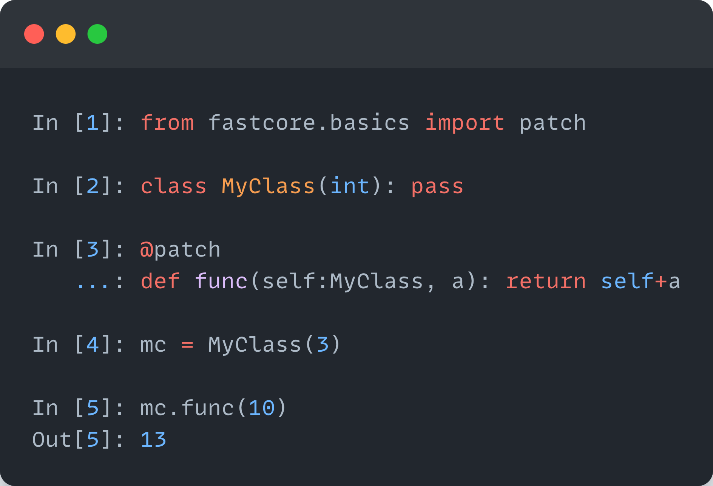

nbdev+Quarto: A new secret weapon for productivity
Originally posted on the fast.ai blog

Our new secret weapon for productivity
Today we’re excited to announce that we’ve teamed up with Quarto to give nbdev superpowers. nbdev offers Python programmers a common set of tools for using Jupyter notebooks to:
- Write & distribute software packages
- Test code, and
- Author documentation and technical articles
Although notebooks are already widely used for once-off exploratory work, it’s less well-known that they are perfectly capable of writing quality software. In fact, we’ve used nbdev for a wide range of software projects over the last three years, including deep learning libraries, API clients, Python language extensions, terminal user interfaces, and more. We discovered that it is not only capable of writing great software but that it has also increased our productivity by 300% or more. With nbdev, developers simply write notebooks with lightweight markup and get high-quality documentation, tests, continuous integration, and packaging for free! Nbdev has allowed us to maintain and scale many open source projects. Pull requests are often accompanied by detailed documentation and tests–contributors simply write notebooks.
This is why we’re excited to share nbdev v2. It’s rewritten from the ground up, with much-anticipated features including:
- Interoperation with non-nbdev codebases for tasks like documentation
- Support for any static site generator
- Wide variety of output mediums such as blogs, papers, slides, and websites
- A faster Jupyter kernel, which also means faster tests
- Cleaner and more extensible API, which supports custom directives, custom module exporters, and more
nbdev in industry
We have piloted nbdev at several companies. We were delighted to receive the following feedback, which fits our own experience using and developing nbdev:
David Berg, on using nbdev for internal documentation at Netflix: “Prior to using nbdev, documentation was the most cumbersome aspect of our software development process… Using nbdev allows us to spend more time creating rich prose around the many code snippets guaranteeing the whole experience is robust. nbdev has turned what was once a chore into a natural extension of the notebook-based testing we were already doing.”

Erik Gaasedelen, on using nbdev in production at Lyft: “I use this in production at my company. It’s an awesome tool… nbdev streamlines everything so I can write docs, tests, and code all in one place… The packaging is also really well thought out. From my point of view it is close to a Pareto improvement over traditional Python library development.”

Hugo Bowne-Anderson, on using nbdev for Outerbounds: “nbdev has transformed the way we write documentation. Gone are the days of worrying about broken code examples when our API changes or [due to] human errors associated with copying & pasting code into markdown files. The authoring experience of nbdev… [allows] us to write prose and live code in a unified interface, which allows more experimentation… On top of this, nbdev allows us to include unit tests in our documentation which mitigates the burden of maintaining the docs over time.”
Roxanna Pourzand, on using nbdev for Transform: “We’re so excited about using nbdev. Our product is technical so our resulting documentation includes a lot of code-based examples. Before nbdev, we had no way of maintaining our code examples and ensuring that it was up-to-date for both command inputs and outputs. It was all manual. With nbdev, we now have this under control in a sustainable way. Since we’ve deployed these docs, we also had a situation where we were able to identify a bug in one of our interfaces, which we found by seeing the error that was output in the documentation.”

What’s nbdev?
Nbdev embraces the dynamic nature of python and REPL-driven development in ways that traditional IDEs and software development workflows cannot. We thoroughly discussed the motivation, history, and goals of nbdev in this initial launch post three years ago. The creator of Jupyter, Fernando Pérez, told us:
[Nbdev] should be celebrated and used a lot more - I have kept a tab with your original nbdev blog post open for months in Chrome because of how often I refer to it and point others to this work
In short, nbdev embraces ideas from literate programming and exploratory programming. These paradigms have been revisited in platforms like XCode Playgrounds and languages like Smalltalk, LISP, and Mathematica. With nbdev, we sought to push these paradigms even further by enabling it for one of the most popular dynamic programming languages in the world: Python.

Even though nbdev is most widely used in scientific computing communities due to its integration with Jupyter Notebooks, we’ve found that nbdev is well suited for a much wider range of software. We have used nbdev to write deep learning libraries, API clients, python language extensions, terminal user interfaces, and more!
Hamel: When I use nbdev, my colleagues are often astounded by how quickly I can create and distribute high-quality python packages. I consider nbdev to be a superpower that allows me to create tests and documentation without any additional friction, which makes all of my projects more maintainable. I also find writing software with nbdev to be more fun and productive as I can iterate very fast on ideas relative to more traditional software engineering workflows. Lastly, with nbdev I can also use traditional text-based IDEs if I want to, so I get the best of both worlds.
What we learned after three years of using nbdev
While nbdev was originally developed to simplify the software development workflow for various fast.ai projects, we found that users wanted to extend nbdev to:
- Write and publish blog posts, books, papers, and other types of documents with Jupyter Notebooks
- Document existing codebases not written in nbdev
- Accommodate traditional Python conventions–for those constrained in how their code is organized and formatted
- Publish content using any static site generator
While we created projects such as fastpages and fastdoc to accomplish some of these tasks, we realized that it would be better to have a single set of flexible tools to accomplish all of them. To this end, we were extremely excited to discover Quarto, an open-source technical publishing system built on pandoc.
Hamel: The more I used nbdev for creating Python modules, the more I wanted to use it for writing blogs and documenting existing codebases. The ability to customize the way notebooks are rendered (hiding vs. showing cells, stripping output, etc.), along with the facilities for including unit tests, made it my go-to authoring tool for all technical content. I’m excited that nbdev2 unlocks all of these possibilities for everyone!
Enter Quarto: A pandoc super-processor
Quarto is a project that enables technical publishing with support for Jupyter Notebook, VSCode, Observable, and plaintext editors. Furthermore, Quarto enables the publishing of high-quality articles, reports, websites, and blogs in HTML, PDF, ePub, PowerPoint slides, and more. Quarto is maintained by RStudio, a company with a long history of products supporting literate programming, such as RMarkdown and RStudio.
Quarto is built on top of Pandoc, a universal document converter that supports nearly any format you can think of. Pandoc achieves this seemingly magical feat by representing documents in a common abstract syntax tree (AST) that serves as the medium through which different formats can be translated. By extension, Quarto allows you to generate content in almost any format you wish! You can use pandoc filters to modify the AST and the output format, which allows you to use any static site generator you want, and programmatically modify and generate content.
Quarto allows you to compose pandoc filters in a processing pipeline and apply them to specific documents or entire projects. You can also distribute filters as Quarto extensions, which makes Quarto extremely customizable.
We also find Quarto compelling because user interfaces such as comment directives (comments that start with #|) correlate with nbdev. In fact, we even learned that nbdev inspired Quarto in this regard! In general, Quarto and nbdev share many goals, and the Quarto team has been incredibly responsive to our suggestions. For example, the ability to create notebook filters to modify notebooks before rendering. Below is a screenshot of a Jupyter notebook rendered with Quarto and nbdev.

Finally, Quarto supports more programming languages than just Python and has been adding new features and fixing bugs at an impressive speed. This gives us confidence that we will be able to expand nbdev to support more use cases in the future. We discuss some of these future directions in the closing section.
A blazing fast notebook kernel: execnb
A core component of nbdev is executing and testing notebooks programmatically. It is important that this notebook runner executes with minimal overhead to maintain our goal of providing a delightful developer experience. This is why we built execnb, a lightweight notebook runner for Python kernels, which executes notebooks blazingly fast. Furthermore, execnb allows parameterized execution of notebooks.
Hamel: I have been an enthusiastic user of tools like papermill that programmatically run notebooks for use-cases like creating dashboards or enabling new kinds of machine learning workflows. I believe execnb unlocks even more possibilities with its ability to inject arbitrary code at any place in a notebook, as well as the ability to pass callbacks that run before and/or after cells are executed. This opens up possibilities to create new types of workflows with notebooks that I am excited about exploring in the near future.
Towards a dialect of python that embraces its dynamic nature
One way to understand nbdev is part of an ecosystem that is designed to embrace Python’s dynamic properties for REPL-driven software engineering. Similar to Clojure, our goal is to provide tools that remove all friction from using the REPL in your programming workflow. We believe that the REPL enhances developer workflows thanks to context-sensitive auto-completion, signature inspection, and documentation–all based on the actual state of your code, and none of which are available in IDEs that depend solely on static analysis. We have found that for this reason, nbdev, with its Jupyter notebook foundation, makes programming significantly more productive and enjoyable.
Our efforts to support REPL-driven development and literate programming are not limited to nbdev. We maintain a number of libraries that extend python to bolster this programming experience. The most notable of these libraries is fastcore, which extends Python in terms of testing, documenting code, metaprogramming, attribute helpers, enhanced representations of objects, and notebook-friendly patching. This blog post offers a gentle introduction to fastcore. In addition to literate programming, fastcore encourages conventions such as brevity and efficient use of vertical space so you can accomplish more with significantly less code. For example, below is a simple decorator that enables notebook-friendly patching:

@patch decorator from fastcoreWe believe that this combination of a new developer workflow (nbdev), Python extensions (fastcore), and associated norms form a new dialect of Python that is centered on leveraging its dynamic nature–in contrast to an ever-growing trend toward static analysis. We suspect that this dialect of Python will be more productive for programmers in many scenarios. We are framing this ecosystem as a “dialect” as it is still very much Python and is approachable by anyone who is familiar with the language. Furthermore, despite nbdev’s notebook workflow, our tools generate plaintext modules that can be navigated and edited with text-based IDEs, allowing programmers to experience the best of both worlds, if they desire.
Hamel: I believe this framing of a Python dialect is key to properly understanding what nbdev is. While it may be tempting to get stuck on specific features or technical details of nbdev, it is useful to zoom out to understand the overall intent of creating a better workflow rather than conforming too rigidly to existing ones. A good analogy is TypeScript’s relationship with JavaScript: it is an extension of an existing programming language that supports a new way of programming. I encourage you to treat nbdev in a similar fashion: be willing to try new ways of programming and observe which tradeoffs resonate with you. At the very least, I believe nbdev is a fun way to experience a different way of writing software, which will broaden your horizons about programming in general, all without having to learn an entirely new programming language!
The future of nbdev
While we are excited about nbdev2, we believe we have only scratched the surface of what’s possible. We are considering the following features:
- Supporting more languages beyond Python, such as Julia, R and JavaScript
- Offering interfaces for executing parameterized notebooks that mimic Python scripts
- Extensions for more static site generators and filters
- Supporting alternate testing backends, such as pytest
- Supporting a greater number of docstring formats, such as Google-style docstrings
- More options to use plain-text or human readable notebook backends other than JSON
If you have interesting ideas about how nbdev can be extended, please drop and chat with us on discord or post a message in the forums.
How you can get started with nbdev
Our project’s website is at nbdev.fast.ai, where we will be posting tutorials, examples, and more documentation in the coming days.
Thank You
This new version of nbdev was a team effort by many wonderful people. We want to highlight two people who have made outstanding contributions:
Wasim Lorgat was instrumental across different areas, including significant contributions to fastcore, execnb, and nbdev, as well as the implementation of the new nbdev home page. With Wasim’s help, we were able to push nbdev to a new level of functionality and quality.
JJ Allaire is not only the CEO of RStudio but also the steward of Quarto. JJ was incredibly responsive and eager to work with us on nbdev and added many features to Quarto specifically with nbdev in mind, such as notebook filters. We were also astounded by the attention to detail and the pace at which bugs are addressed. This new version of nbdev would not have been possible without JJ’s help, and we are excited to continue to work with him.
We also want to thank the amazing fastai community, notably Isaac Flath, Benjamin Warner and Zach Mueller for their tireless work on this project.
A conversation with JJ Allaire
To celebrate the launch of nbdev v2 and Quarto, Jeremy sat down with the CEO of Posit (previously known as RStudio, the company behind Quarto), JJ Allaire, to talk about software development, scientific publishing, R, Python, literate programming, and much more.